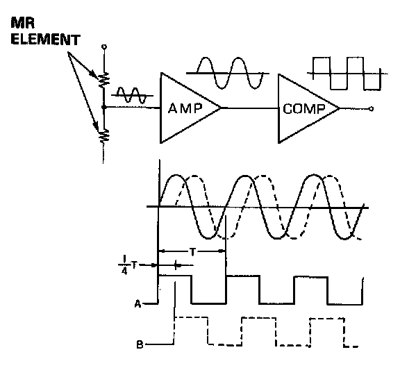
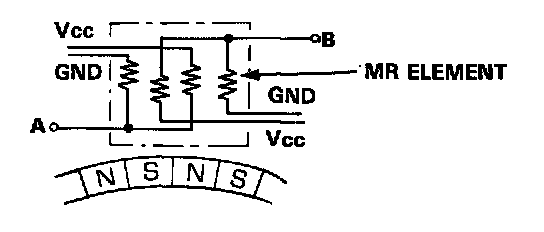

Steering Angle Sensor: Description and Operation
Steering angle is detected by the steering angle sensor, located on the steering column. The sensor uses two magneto-resistor (MR) elements to determine steering angle and direction of rotation. When the driver turns the steering wheel, a magnet in the steering shaft generates waves in the "MR" elements. These waves are amplified and converted into signals which the control unit can interpret as angle and direction of turn.
